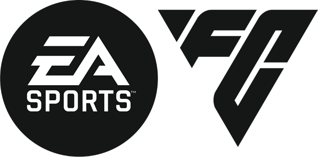

Most of the people who play video games will recognize the left logo. It belongs to EA Sports. I chose this logo because I'm doing FIFA eSports. Since the next generation of football games by EA are not called FIFA because they ended their contract, it's going to be called EA Sports FC. Now, you'll probably recognize the right logo. Down below, you'll find more information about my eSports career.

Ich darf nun endlich offiziell verkünden, dass ich ab sofort @WackerGaming auf dem virtuellem Rasen repräsentieren werde. 🎮⚽️
— Seb (@xSeb22) October 9, 2021
Ich freue mich und hab Bock auf die neue Fifa Saison! 💪🔥 pic.twitter.com/j0MY9BLVcY
First of all, I probably started playing FIFA at a young age because I was playing footboll in the real world as well.
Then, it all started, when I realized I was getting better over the years with a first peak in FIFA 21
where I won against several pro players and won some tournaments.
Because of that, Wacker Gaming,
which is the eSports team of the real life football club FC Wacker Innsbruck that played in 2nd division in Austria,
caught my attention. That's why I joined them for the FIFA 22 season. The post/tweet or whatever you call it nowadays
on the left was my announcement.
In that year, I gained my first experience as a professional FIFA player. I played a few tournaments, e.g. eClub Series, where I
represented my club. Additionally, I was able to qualify for my first european qualifier. I was eliminated after four rounds because
I won just one and lost three but it was still nice to play it.
At the end of the FIFA 22 season, it turned out that this was the last season for Wacker Gaming because
of financial problems the club FC Wacker Innsbruck had. Due to that, I had no club or organization for the upcoming season in FIFA 23.
Click here if you want to see more details about my FIFA 22 season.

I actually went with zero expectation into FIFA 23 but it turned out to be really great. I qualified
for an german/austrian qualifier. I didn't win a single game there but gained some experience.
In January, I went to a bootcamp and got chosen to be a part of the eSports Player Foundation (short: EPF).
Because of the EPF, I got better and better and went to an academy finale of VfL Bochum eSports. In the end, I didn't
play my best game there but still got chosen there!
Click here if you want to see more details about my FIFA 23 season or
Click here if you want to see more details about myself and the EPF.
Here We Go @VfL1848eSports ! ✅️
— Seb (@xSeb22) June 25, 2023
Kann mich nur bei allen bedanken und hab definitiv Bock mit @RobKay_official zusammen anzugreifen! ❤️ https://t.co/BCJk1dtrb0
As you witnessed, I'm now playing for VfL Bochum 1848 eSports as an academy player in EA FC.
You can see their and my announcement on the post left!
I'm really looking forward to the new season
in EA FC 24 eventhough there are going to be some major changes to EA's eSports system. I've got nice and
friendly people around me.
We'll push eachother and are going to achieve something important next season ☝️
If you want to follow my career, just check my Socials!